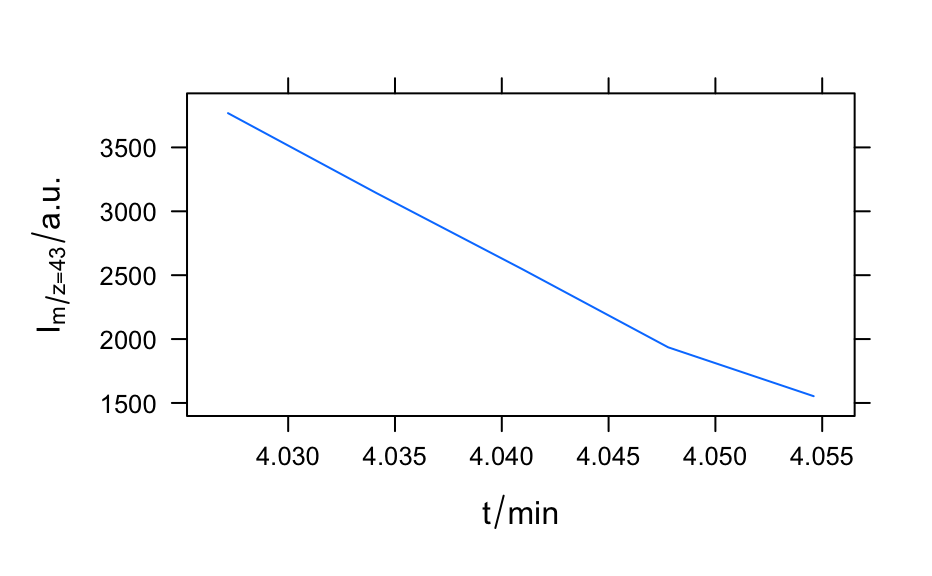

A time series of mass spectra in a list of hyperSpec objects.
barbiturates
Format
The data sets consists of a list of 5 hyperSpec objects with a single spectrum each. They are the first five spectra of the BARBITUATES.SPC example data from Thermo Galactic's spc file format specification.
References
The raw data is available with package hySpc.read.spc.
Author
C. Beleites and Thermo Galactic
Examples
barbiturates#> [[1]] #> hyperSpec object #> 1 spectra #> 4 data columns #> 37 data points / spectrum #> #> [[2]] #> hyperSpec object #> 1 spectra #> 4 data columns #> 34 data points / spectrum #> #> [[3]] #> hyperSpec object #> 1 spectra #> 4 data columns #> 29 data points / spectrum #> #> [[4]] #> hyperSpec object #> 1 spectra #> 4 data columns #> 26 data points / spectrum #> #> [[5]] #> hyperSpec object #> 1 spectra #> 4 data columns #> 22 data points / spectrum #>#> [1] 5barb <- collapse(barbiturates, collapse.equal = FALSE) barb <- wl_sort(barb) plot(barb, lines.args = list(type = "h"), col = palette_matlab_dark(5), stacked = TRUE, stacked.args = list(add.factor = .2) )if (require(latticeExtra)) { levelplot(spc ~ .wavelength * z, log(barb), panel = panel.levelplot.points, cex = 0.3, col = "#00000000", col.regions = palette_matlab(20) ) }#>#> #>#> #> #>#> Warning: device support for raster images unknown, ignoring 'raster=TRUE'plotc(apply(barb[, , 42.9 ~ 43.2], 1, sum, na.rm = TRUE), spc ~ z, panel = panel.lines, ylab = expression(I[m / z == 43] / "a.u.") )